Анализ и улучшение сайта
Безопасность, скорость, код, доступность, формы, данные.
от $600
Подробнее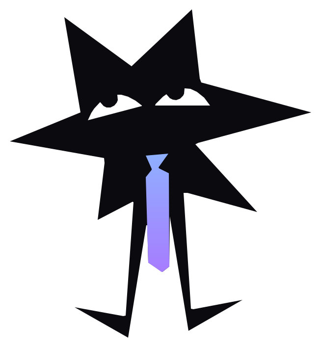
LIVSKY Коммерческое предложение · 25.11.2026 karkas-hr.proМы проверили сайт, поиск и ответы нейросетей и собрали три направления работы: улучшение сайта, SEO и GEO, редизайн и брендинг. Для каждого есть состав, сроки и цена. Брать можно по отдельности или комплексом.
Сайт технически чистый и быстрый, а клиент его не находит и не до конца ему доверяет. Поэтому сначала чиним то, что мешает, потом строим страницы под спрос, потом обновляем лицо бренда.
Безопасность, скорость, код, доступность, формы, данные.
от $600
ПодробнееСтраницы под запросы клиентов, доверие, видимость в Яндексе, Google и ответах нейросетей.
от $850
ПодробнееНовый визуальный язык, блок доверия, макеты ключевых страниц.
от $1 100
ПодробнееРекомендуемые пакеты ($1 950 + $2 050 + $2 300 = $6 300) со скидкой 10% за комплекс. Подробный расчёт в разделе «Цена».
Сайт работает, но проигрывает в мелочах, которые стоят заявок и репутации. Ниже 17 находок с доказательствами из ваших замеров, кода страницы и трёх юридических страниц сайта.
| Показатель | Значение | Как читать |
|---|---|---|
| Security Headers | F | Ни одного защитного заголовка |
| Lighthouse Performance | 81 и 97 | Два замера в разных условиях, ориентир по телефону лучше брать после правок |
| Lighthouse Accessibility | 89 | Не хватает label у полей, есть проблемы с вкладками |
| Lighthouse Best Practices | 77 | Причины по скриншоту не видны, уточним при старте |
| Вес страницы | 511 кБ, 851 кБ ресурсов | До 54% веса занимают шрифты Google |
| Время 15,35 с | не время загрузки | Так выглядит шкала Network при открытой вкладке; на скорость страницы не указывает |
| Ошибки валидатора | 12 | Часть видна на скриншоте, остальные снимем при старте |
Скриншоты ваших замеров. Условия: расширение включено, кэш отключён. Поэтому мы сравниваем «до» и «после» в одинаковых условиях, а не обещаем конкретные баллы.
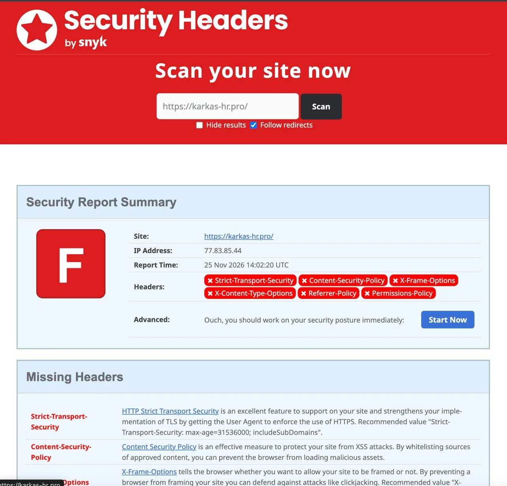
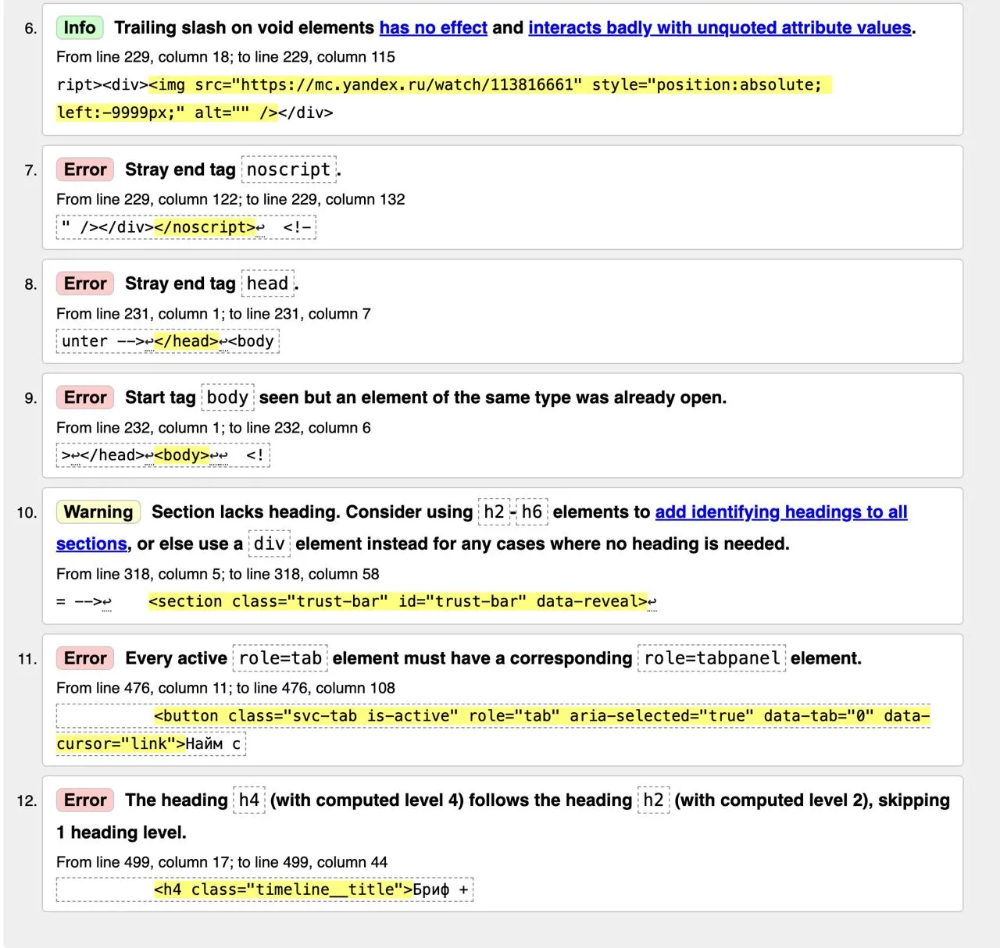
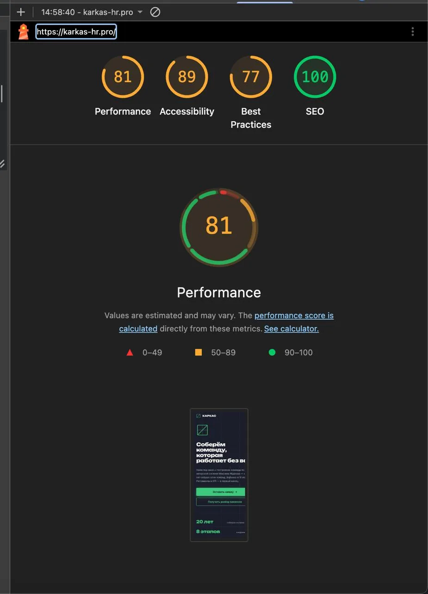
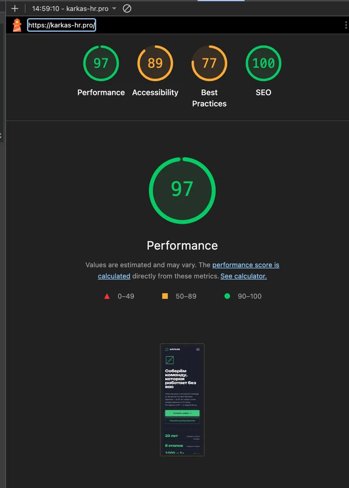
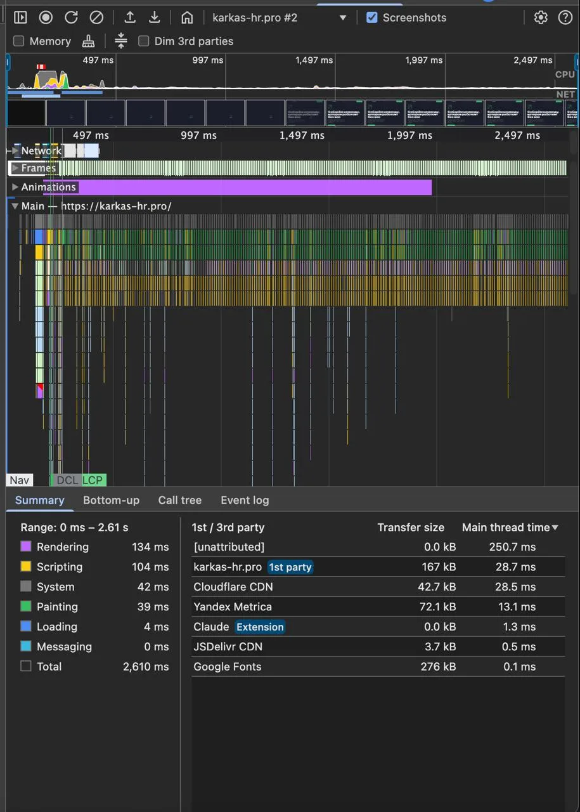
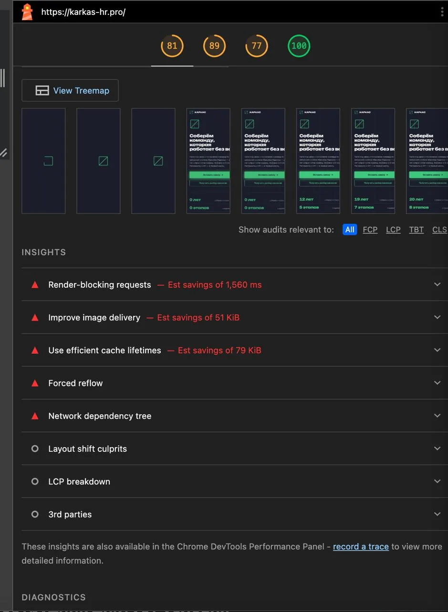
Ставка $37 в час (около 3 000 ₽ по курсу ЦБ). Часы указаны вилкой, потому что код форм и скриптов анимации мы пока не видели.
| Блок работ | Что входит | Часы | Цена |
|---|---|---|---|
| Безопасность | Заголовки в Caddy, HSTS, CSP в режиме отчётов, свои копии GSAP и Lenis | 5–8 | $185–$296 |
| Скорость: ресурсы | Свои шрифты WOFF2, фото в WebP/AVIF, Cache-Control, слияние CSS и JS | 10–16 | $370–$592 |
| Скорость: JS | Профилирование, forced reflow, пауза канваса вне экрана, цифры в HTML, reduced-motion | 6–10 | $222–$370 |
| Код и доступность | 12 ошибок валидатора, вкладки, заголовки, label, фокус, курсор на touch | 8–12 | $296–$444 |
| Формы и данные | Обработчик форм, лимиты, серверная валидация, цели Метрики, баннер cookie | 6–10 | $222–$370 |
| Контент-правки | Год в футере, число в кейсе QCS, email и телефон в разметке | 2–3 | $74–$111 |
| Тестирование и отчёт | Повторные замеры Lighthouse и Security Headers, отчёт «до и после» | 5–8 | $185–$296 |
| Управление проектом | Согласования, созвоны, приёмка | 3–5 | $111–$185 |
| Итого, если брать всё | 45–72 | $1 665–$2 664 | |
около 17 ч
$600
около 54 ч
$1 950
около 80 ч
$2 900
Переделывать сайт для поиска не нужно, нужно достраивать. Все услуги лежат на одной главной, и слов «подбор персонала» и «кадровое агентство» на ней нет. По 6 запросам в Яндексе и 6 в Google, которые мы проверили, КАРКАСа нет в первой выдаче: его находят по названию.
Наша общая оценка по методике агентов: 62 из 100 (это не метрика поисковиков). Техника 80, скорость 90, разметка 70, картинки 60, контент 55, готовность к нейросетям 50, тексты и структура под запросы 40.
| Группа | Запросы в месяц (Вордстат, вместе с хвостами) | Что делаем |
|---|---|---|
| Ядро | услуги по подбору персонала до 12 871, рекрутинговое агентство до 7 811, агентство по подбору персонала до 6 267, hr агентство до 2 629 | Главная и хаб «Подбор персонала» |
| Узкие, самые денежные | аутсорсинг подбора 819, построение отдела продаж 735, подбор менеджеров по продажам 364, подбор РОП 60, стоимость подбора 156 | Отдельная страница на каждую услугу, в Google у РОПа и построения отдела сложность 0 |
| Удалённо и отзывы | подбор персонала удалённо 1 345, отзывы кадровых агентств 1 947 | Сказать прямо, что работаете по России удалённо; отзывы на сайте и площадках |
| Общие | подбор персонала 103 465, кадровое агентство 47 123 | Не берём целью на старте: много соискателей и поиска по городам |
HR-агентство для бизнеса на 10–50 человек: подбор под ключ по воронке из 8 этапов от 40 000 ₽, подбор РОПа и менеджеров по продажам, построение отдела продаж, удалённо по всей России.
Эта фраза должна быть на главной, в разметке и во всех профилях. Правило: один запрос, одна страница.Доступы, цели Метрики, регион в Вебмастере. Title, H1, описание, абзац-определение и ответы на вопросы. Контакты, разметка, карта сайта, иконка, правки сервера. Единая таблица цен и гарантии, профили на Яндекс Бизнесе, Услугах, Авито, Профи и hh.ru.
Хаб «Подбор персонала», страница «Подбор РОП» и каталог услуг по готовым ТЗ. Публикация и переобход. Правка 10 статей: ссылки на услуги и формы.
«Подбор менеджеров по продажам», страница о Максиме. Отзывы на сайте и площадках, партнёрские ссылки. Перенос скриптов и шрифтов на свой сервер.
«Построение отдела продаж» и страница контактов. Второй замер ответов нейросетей. Отчёт: что сделали, какие страницы в индексе, как сдвинулись позиции и показы, план на следующий месяц.
Финтех-сервис оплаты зарубежных подписок, 6 недель осенью 2026: переходы из Google на внутренние страницы выросли на 65% (78 → 129 за 22 дня, без главной), 32 из 53 страниц блога и каталога поднялись в выдаче, средняя позиция страницы про привязку карты в Google 38,5 → 10,4.
Проект нашего SEO-руководителя до запуска LIVSKY, без названия клиента. Ещё 200+ публикаций на внешних площадках для трёх клиентов.1 неделя
$850
1 месяц
$2 050
со 2-го месяца
$900 / мес
Расходы клиента отдельно: Ahrefs от $129 в месяц и Топвизор около $30 в месяц. Платные размещения на площадках по согласованию.
Чего мы не проверяли: реальные позиции, запросы, показы и заявки (нужны доступы к Метрике, Вебмастеру и Search Console), ответы ChatGPT, Perplexity, Алисы и GigaChat напрямую. Формы не отправляли, чтобы не создавать ложных заявок.
Структура сайта работает, но визуально он не доказывает то, что обещает: нет блока доверия, лид-магнит без примера, контакты в одном канале, цены «по запросу» без объяснения. Новый визуальный язык должен делать сайт заметнее и убедительнее, а не просто красивее.
Этот раздел основан на аудите сайта и ваших замерах. Детальный дизайнерский разбор (сетка, типографика, иерархия, мобильные экраны) мы подготовим на этапе «Разбор» и уточним состав макетов.
2–3 недели
$1 100
5–6 недель
$2 300
7–8 недель
$3 750
Вёрстка по утверждённым макетам оценивается отдельно по ставке части 1. Ориентир: $1 200–1 950.
Бренд LIVSKY и GLANCE в разделе «Кейсы» ниже: от концепций маскота до фирменного стиля и носителей.
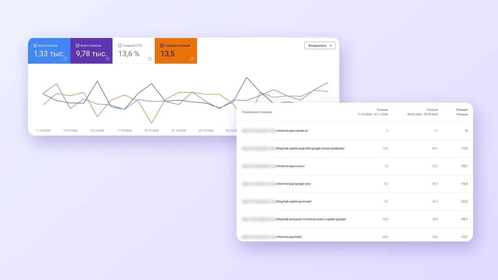
Страницы поднялись в Google за шесть недель
Проект нашего SEO-руководителя до запуска LIVSKY. Рост общего трафика включает поиск по названию сервиса, поэтому в цифрах берём только страницы.
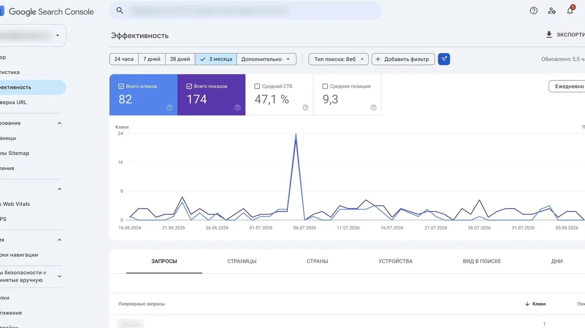
Два сайта на двух языках, своя онлайн-запись и первая страница Google
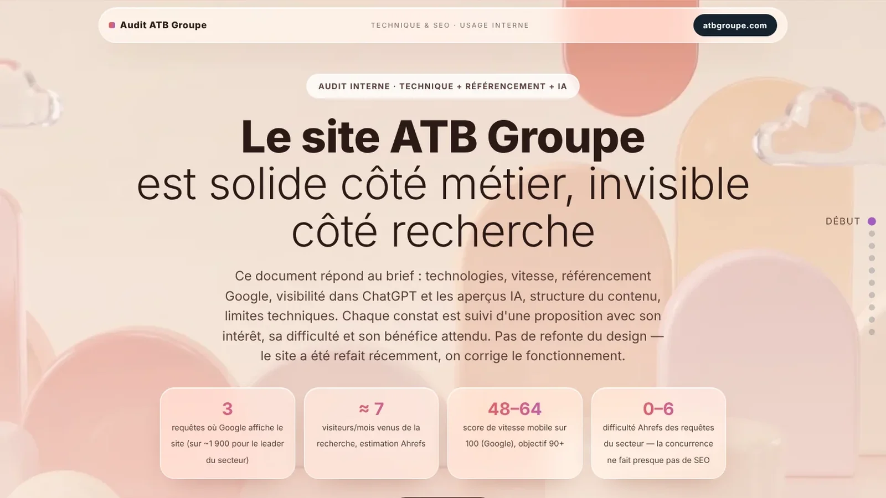
Аудит сайта по тому же формату, что и это предложение
Внедрение идёт, результаты ждём по мере правок.
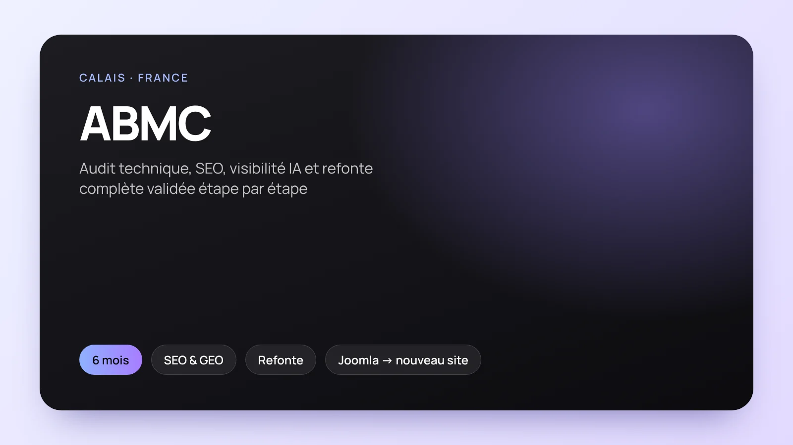
Полгода работы: аудит, SEO и редизайн по этапам
Работа идёт: аудит и план готовы.
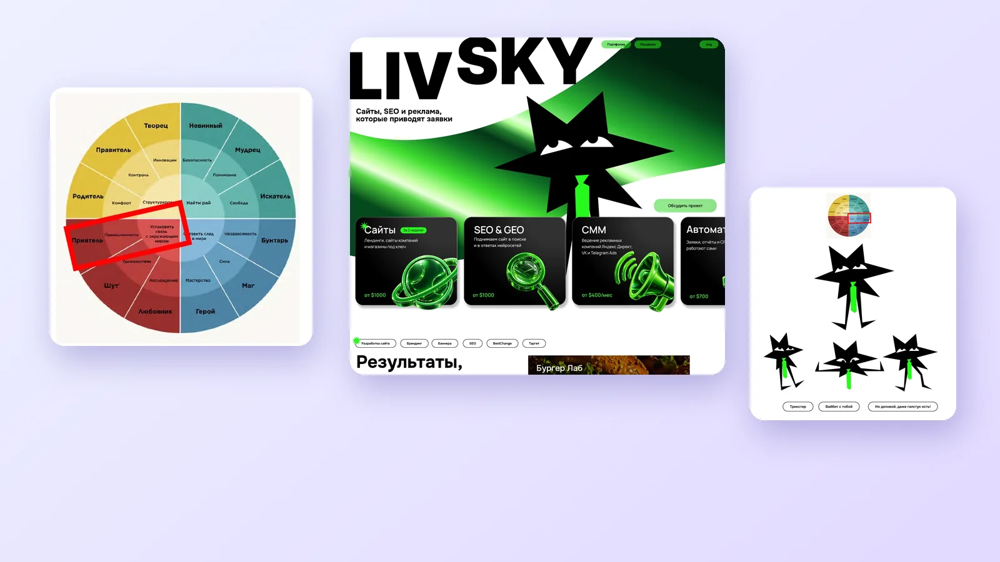
От колеса архетипов до маскота и сайта в фирменном стиле
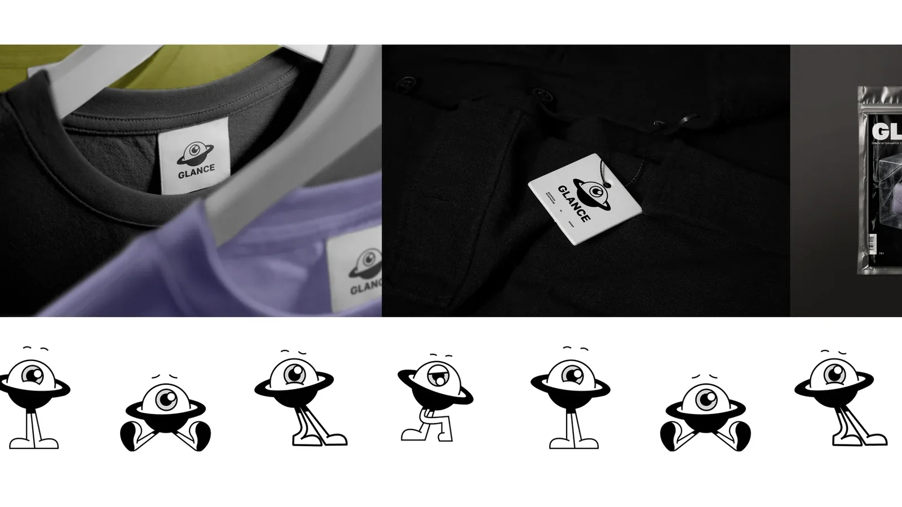
Логотип-планета с глазом, маскот в 7 позах и бирки для одежды
Изучаем бизнес, конкурентов и текущие цифры. Находим, где теряются заявки, и ставим цель в цифрах.
Собираем план: что делаем в каком порядке, кто отвечает, как меряем. Смету и сроки фиксируем в договоре до старта.
Делаем и показываем результат каждую неделю. На каждом этапе до 5 правок входят в цену.
Раз в две недели смотрим, откуда заявки и сколько они стоят. Что не работает, убираем.
Правки сайта идут первыми: SEO и дизайн опираются на чистую основу.
Первые страницы выходят на второй неделе, параллельно с частью 1.
Макеты идут параллельно, вёрстка стартует после утверждения.
| Часть | Пакет | Срок | Цена |
|---|---|---|---|
| 1. Улучшение сайта | Стандарт | около 54 ч | $1 950 |
| 2. SEO и GEO | Запуск (1 месяц) | 1 месяц | $2 050 |
| 3. Редизайн | Редизайн | 5–6 недель | $2 300 |
| Сумма пакетов | $6 300 | ||
| Скидка за комплекс 10% | −$630 | ||
| Итого комплекс | $5 670 | ||
Мы мыслим очень просто и без бюрократии в общении.
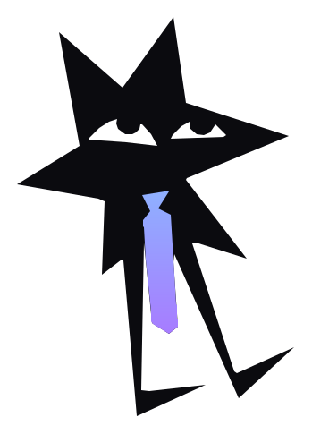
София, основательница: программистка и SEO с маркетинговым опытом.
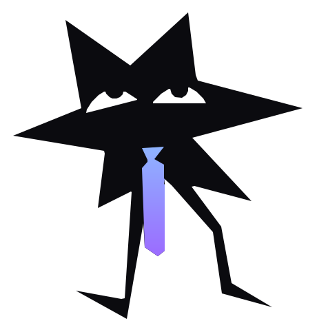
SEO-руководитель LIVSKY. Проекты в финтехе, 200+ публикаций на внешних площадках.
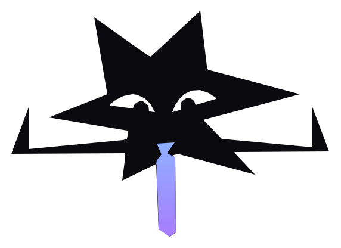
Лид дизайна LIVSKY: брендинг, маскоты, веб-дизайн и моушн.
Ответим в течение дня. Напишите, какую часть берёте, и мы согласуем смету.